소음진동산업기사 (2012-05-20 기출문제)
1과목: 소음진동개론
1. 음에 관한 설명으로 옳지 않은 것은?
- 초음파음은 직진성이 크고, X선과 같이 상을 만든다.
- 20kHz를 넘는 음을 초음파음이라 하고, 제트엔진, 고속드릴, 세척장비 등에서 발생된다.
- 초저주파음에 의한 일시적 가청변위는 거의 나타나지 않으며 나타난다 하더라도 원래의 레벨로 아주 빨리 회복되는 편이다.
- 초저주파음은 인체가 느끼지 못하며, 금속의 결함 검출과 같은 인공적인 특수한 용도에만 사용이 한정되는 편이다.
(정답률: 알수없음)

2. 다음 용어 중 소음평가와 관련된 설명으로 옳지 않은 것은?
- NEF - 항공기 소음 평가척도
- L90 - 90% 레인지의 상단치
- Ldn - 주·야 평균소음레벨
- SIL - 회화방해레벨
(정답률: 알수없음)
3. 청감보정 회로의 A특성과 C특성으로 소음을 측정한 경우에 관한 설명으로 가장 적합한 것은?
- A특성으로 측정한 값이 C특성으로 측정한 값보다 훨씬 크면 고주파수가 주성분이다.
- A특성으로 측정한 값이 C특성으로 측정한 값보다 훨씬 작으면 고주파수가 주성분이다.
- A특성으로 측정한 값이 C특성으로 측정한 값과 비슷하면 저주파수가 주성분이다.
- A특성으로 측정한 값이 C특성으로 측정한 값과 비슷하면 고주파수가 주성분이다.
(정답률: 알수없음)
4. 음에 관한 다음 설명 중 ( )안에 가장 적합한 것은?
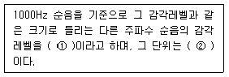
- ① 라우드니스 레벨, ② dB
- ① 라우드니스 레벨, ② phon
- ① 등가소음레벨, ② dB
- ① 등가소음레벨, ② phon
(정답률: 알수없음)
5. 진동의 영향으로 옳지 않은 것은?
- 배 속의 음식물이 심하게 오르락 내리락 함을 느끼고 발성에 영향을 주는 진동수는 12~16Hz 정도이다.
- 1~3Hz 정도에서 호흡이 힘들고, O2 소비가 증가한다.
- 4~14Hz 정도에서 복통을 느낀다.
- 1~2Hz 정도에서 심한 공진현상을 보이고, 60~70Hz 정도에서 2차적으로 공진을 나타난다.
(정답률: 알수없음)
6. 20℃ 공기 중에서 500Hz인 음의 파장은?
- 약 0.3m
- 약 0.5m
- 약 0.7m
- 약 1m
(정답률: 알수없음)
7. 다음 중 도로교통 소음평가에 이용되는 것으로 이 값이 74 이상이면 주민의 과반수 이상이 불만을 호소하는 것은?
- NEF
- TNI
- SIL
- PNL
(정답률: 알수없음)
8. 무지향성 점음원이 있다. 이 음의 세기를 2배로 하면 음세기레벨은 어떻게 변화되는가?
- 2dB 증가
- 3dB 증가
- 6dB 증가
- 9dB 증가
(정답률: 알수없음)
9. A공장에서 발생하는 3음원의 파워레벨이 각각 100dB, 90dB, 95dB 였다면, 이 음원의 파워레벨합은?
- 95.0dB
- 98.4dB
- 101.5dB
- 104.2dB
(정답률: 알수없음)
10. 발음원이 이동할 때 그 진행 방향쪽에서는 원래 발음원의 음보다 고음으로, 진행 반대쪽에서는 저음으로 되는 현상은?
- Pink noise 효과
- Huyghens 효과
- Coincidence 효과
- Doppler 효과
(정답률: 알수없음)
11. 짧은 변 4m, 긴 변 15m인 면음원이 있다. 이 면음원으로부터 중심축 방향으로 1m 떨어진 점에서 실측한 음압레벨이 92dB 였다. 이 때 같은 방향으로 3m 떨어진 지점에서의 음압레벨(dB)은?
- 84.7dB
- 88.5dB
- 90.7dB
- 95.2dB
(정답률: 알수없음)
12. 50phon의 소리는 몇 sone인가?
- 1sone
- 2sone
- 3sone
- 4sone
(정답률: 알수없음)
13. 1/1옥타브밴드 분석기에서 중심주파수가 8000Hz일 때 주파수 밴드폭은 몇 Hz인가?
- 9506Hz
- 8228Hz
- 5656Hz
- 3535Hz
(정답률: 알수없음)
14. 음에 관한 용어 및 성질에 관한 설명으로 옳지 않 은 것은?
- 음선은 음의 진행방향을 나타내는 선으로 파면에 수직이다.
- 음파는 공기 등의 매질을 통하여 전파하는 소밀파로 순음의 경우 그 음압은 정현파적으로 변한다.
- 발산파는 음원으로부터 거리가 멀어질수록 더욱 좁은 면적으로 퍼져나가는 파이다.
- 평면파는 긴 실린더의 피스톤 운동에 의해 발생하는 파로서 음파의 파면들이 서로 평행인 파이다.
(정답률: 알수없음)
15. 공기 중에서 입자속도의 실효치가 8×10-3m/s 일대 음압레벨은? (단, 공기밀도 및 음속은 각각 1.2kg/m3, 340m/s로 한다.)
- 약 84dB
- 약 96dB
- 약 104dB
- 약 113dB
(정답률: 알수없음)
16. 소음이 청력에 미치는 영향에 관한 설명으로 옳은 것은?
- 일시적 난청은 PTS 라고도 하며, 영구적 청력손실을 예측하는 근거가 되기도 한다.
- 영구적 난청은 소음성 난청이라고도 하며, 4000Hz 정도부터 난청이 진행된다.
- 노인성 난청은 저주파음(2000Hz)에서부터 난청이 시작된다.
- TTS는 소음에 폭로된 후 2일~3주 정도 지난 후에 도 정상청력으로 회복되지 않는다.
(정답률: 알수없음)
17. 옥외 자유공간에서 파워레벨이 85dB인 무지향성점음원으로부터 5m 떨어진 점에서의 음압레벨은?
- 60dB
- 62dB
- 64dB
- 66dB
(정답률: 알수없음)
18. 스프링 탄성계수 K=1kN/m, 질량 m=10kg인 계의 비감쇠 자유진동 시 주기는?
- 약 0.3초
- 약 0.6초
- 약 0.9초
- 약 1.6초
(정답률: 알수없음)
19. 점음원의 파워레벨이 91dB이고, 그 점음원이 세면이 접하는 모퉁이에 놓여 있을 때 10m 되는 지점에서의 음압레벨은?
- 60dB
- 64dB
- 69dB
- 73dB
(정답률: 알수없음)
20. 현재 기계의 측정된 음향파워레벨이 80dB 였다면, 이 기계의 음향파워는?
- 10-2W
- 10-4W
- 10-8W
- 10-12W
(정답률: 알수없음)
2과목: 소음진동 공정시험 기준
21. 다음은 도로교통진동한도 측정을 위한 측정시간 기준이다. ( )안에 가장 적합한 것은?
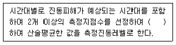
- 2시간 이상 간격으로 2회 이상 측정
- 4시간 이상 간격으로 2회 이상 측정
- 2시간 이상 간격으로 주간 2회 이상, 야간 2회 이상 측정
- 4시간 이상 간격으로 주간 2회 이상, 야간 2회 이상 측정
(정답률: 알수없음)
22. 배출허용기준 중 소음측정시 소음평가에 관한 사항으로 옳지 않은 것은?
- 피해가 예상되는 자의 부지경계선에서 측정할 때 측정 지점의 지역구분 적용시 공장이 위치한 지역과 피해가 예상되는 자의 지역이 서로 다를 경우 지역별 적용은 대상 공장이 위치한 지역을 기준으로 적용한다.
- 가동시간은 측정 당일전 30일간의 정상가동시간을 산술평균하여 정하여야 한다.
- 관련시간대에 대한 측정소음 발생시간의 백분율을 구할 때에는 휴식, 기계수리 등의 시간을 포함하여 정상가동시간으로 적용한다.
- 측정소음도 및 배경소음도는 배출시설의 변동없이 24시간 가동한 경우에는 낮시간대의 대상소음도를 저녁, 밤시간의 대상소음도를 적용하여 각각 평가하여야 한다.
(정답률: 알수없음)
23. 다음은 진동레벨계의 성능기준이다. ( )안에 알맞은 것은?
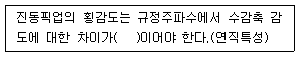
- 5dB 이상
- 10dB 이상
- 15dB 이상
- 20dB 이상
(정답률: 알수없음)
24. 항공기소음은 원칙적으로 얼마동안 측정해야 하는가?
- 1일
- 연속 3일간
- 연속 7일간
- 연속 15일간
(정답률: 알수없음)
25. 측정진동레벨이 배경진동레벨보다 얼마 미만으로 크면 배경진동이 대상진동보다 크므로 재측정하여 대상진동레벨을 구하는가?
- 3dB 미만
- 5dB 미만
- 10dB 미만
- 12dB 미만
(정답률: 알수없음)
26. 진동레벨계의 지시계기 눈금오차의 성능기준으로 옳은 것은?
- 0.1dB 이내
- 0.5dB 이내
- 1dB 이내
- 10dB 이내
(정답률: 알수없음)
27. 항공기소음한도 측정방법에 관한 설명으로 옳지 않은 것은?
- 사용 소음계는 KS C IEC61672-1에 정한 클래스 2의 소음계 또는 동등 이상의 성능을 가진 것이어야한다.
- 소음계의 동특성을 느림(slow)모드를 하여 측정하여야 한다.
- 측정점은 상시측정용의 경우에는 주변환경, 통행, 타인의 촉수 등을 고려하여 지면 또는 바닥면에서 1.2~5.0m 높이로 할 수 있다.
- 항공기 소음으로 인하여 문제를 일으킬 우려가 없는 장소를 택하여야 하며, 측정지점 반경 5m 이내는 가급적 평활하고, 시멘트 등으로 포장되어 있어야 한다.
(정답률: 알수없음)
28. 규제기준 중 동일건물 내 사업장소음을 디지털 소음자동분석계를 사용하여 측정할 경우 측정소음도로 정하는 기준은?
- 샘플주기를 1초이내에서 결정하고 5분이상 측정하여 자동 연산·기록한 등가소음도를 그 지점의 측정소음도로 한다.
- 샘플주기를 5초이내에서 결정하고 1분이상 측정하여 자동 연산·기록한 등가소음도를 그 지점의 측정소음도로 한다.
- 샘플주기를 5초이내에서 결정하고 5분이상 측정하여 자동 연산·기록한 등가소음도를 그 지점의 측정소음도로 한다.
- 샘플주기를 1초이내에서 결정하고 1분이상 측정하여 자동 연산·기록한 등가소음도를 그 지점의 측정소음도로 한다.
(정답률: 알수없음)
29. 다음은 환경기준 중 소음측정을 위한 풍속조건이다. ( )안에 알맞은 것은?
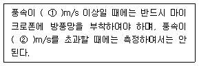
- ① 2, ② 5
- ① 2, ② 20
- ① 5, ② 10
- ① 5, ② 20
(정답률: 알수없음)
30. 환경기준 중 소음측정방법에서 측정점 선정시 도로단으로부터 차선 수가 6차선 일 때, 도로변 지역의 범위는 도로단으로부터 얼마이내의 지역인가? (단, 일반도로이며, 고속도로 또는 자동차 전용도로는 해당하지 않는다.)
- 10m 이내
- 15m 이내
- 60m 이내
- 150m 이내
(정답률: 알수없음)
31. 다음 중 마이크로폰의 중요한 특성으로 가장 거리가 먼 것은?
- 주파수, 데시벨의 계측범위
- 사용 온도조건
- 감도, 지향성
- 방사계수
(정답률: 알수없음)
32. 표준음 발생기에서 발생음의 오차는 몇 dB 이내이어야 하는가?
- ±1dB 이내
- ±3dB 이내
- ±5dB 이내
- ±10dB 이내
(정답률: 알수없음)
33. 소음계의 구성이 아래 그림과 같은 때, 3에 해당하는 부분은?
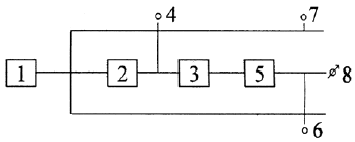
- amplifier
- fast-slow switch
- meter
- microphone
(정답률: 알수없음)
34. 배출허용기준 중 진동측정방법으로 옳은 것은?
- 피해가 예상되는 적절한 측정시각에 1지점 이상의 측정 지점수를 선정·측정하여 산술평균한 진동레벨을 측정 진동레벨로 한다.
- 진동픽업은 수평방향 진동레벨을 측정할 수 있도록 설치한다.
- 측정진동레벨은 대상 배출시설의 진동발생원을 가급적 중간출력으로 가동시킨 상태에서 측정한다.
- 진동픽업의 설치장소는 완충물이 없고, 충분히 다져서 단단히 굳은 장소로 한다.
(정답률: 알수없음)
35. 규제기준 중 동일건물 내 사업장소음 측정방법에 관한 설명으로 옳지 않은 것은?
- 측정소음도는 대상소음원의 일상적인 사용상태에서 정상적으로 가동시켜 측정하여야 한다.
- 측정은 대상 소음 이외의 소음이나 외부소음에 의한 영향을 배제하기 위하여 옥외 및 복도 등으로 통하는 창문과 문을 닫은 상태에서 측정하여야 한다.
- 대상소음원의 가동 중지가 어렵다고 인정되는 경우에는 배경소음도 측정없이 측정소음도를 대상소음도로 할 수 있다.
- 피해가 예상되는 적절한 측정 시각에 2지점 이상의 측정지점수를 선정하고 각각 4회 이상 측정하여 각 지점에서 산술 평균한 소음도를 측정소음도로 한다.
(정답률: 알수없음)
36. 규제기준 중 발파소음 측정시 측정소음도의 표기방법으로 가장 적합한 것은?
- Lmin
- Lmax
- L10
- Lavg
(정답률: 알수없음)
37. 환경기준 중 소음측정방법상 “도로변지역”의 소음측정점 선정기준으로 가장 적합한 것은?
- 당해지역의 소음평가에 현저하게 영향을 미칠 것으로 예상되는 공장주위를 우선으로 선정한다.
- 당해지역 중 도로에 가장 근접한 장소로 한다.
- 옥내에서 소음이 가장 높은 지점을 택하여야 한다.
- 도로변 지역에서는 소음으로 인하여 문제를 일으킬 우려가 있는 장소를 택하여야 한다.
(정답률: 알수없음)
38. 규제기준 중 발파소음 측정방법으로 가장 거리가 먼 것은?
- 소음계와 소음도기록기를 연결하여 측정·기록하는 것을 원칙으로 하되, 소음계만으로 측정할 경우에는 최고소음도가 고정(hold)되는 것에 한한다.
- 소음계의 동특성은 원칙적으로 빠름(fast)모드를 하여 측정하여야 한다.
- 측정시간 및 측정지점수는 작업일지 등을 참조하여 소음진동관리법규에서 구분하는 각 시간대 중에서 평균 발파소음이 예상되는 시각의 발파소음을 3지점 이상에서 측정한 값을 기준으로 한다.
- 측정소음도는 발파소음이 지속되는 기간 동안에 측정하여야 한다.
(정답률: 알수없음)
39. 진동레벨계의 지침형 지시계기의 성능기준으로 옳은 것은?
- 유효지시범위가 10dB 이상이어야 하고, 각각의 눈금은 1dB 이하를 판독할 수 있어야 한다.
- 유효지시범위가 15dB 이상이어야 하고, 각각의 눈금은 1dB 이하를 판독할 수 있어야 한다.
- 유효지시범위가 10dB 이상이어야 하고, 각각의 눈금은 10dB 이하를 판독할 수 있어야 한다.
- 유효지시범위가 15dB 이상이어야 하고, 각각의 눈금은 10dB 이하를 판독할 수 있어야 한다.
(정답률: 알수없음)
40. 소음계 지시계기의 반응속도를 빠름 및 느림의 특성으로 조절하는 장치는?
- pistonphone
- tripod
- weighting networks
- fast-slow switch
(정답률: 알수없음)
3과목: 소음진동방지기술
41. 어떤 계에서 계의 변위 x=x0sin(wt+ø)일 때, 위상각 ø는? (단, ξ감쇠비, w/wn고유각진동수에 대한 강제각진동수와의 비이다.)
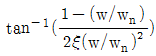
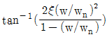
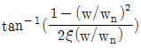
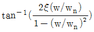
(정답률: 알수없음)
42. 금속 자체에 진동흡수력을 갖는 제진합금의 분류 중 전위형의 구성성분으로 옳은 것은?
- Al, Zn의 합금(Zn 5%)
- Mg, Mg-Zr의 합금(Zr 0.6%)
- 12% Cr강
- Cu-Al-Ni의 합금
(정답률: 알수없음)
43. x1=6sin40t, x2=6sin41t 인 2개의 진동이 동시에 일어날 때 울림주기는?
- 0.16초
- 0.32초
- 3.14초
- 6.28초
(정답률: 알수없음)
44. 공명형 소음기의 공명 주파수에 관한 설명으로 옳지 않은 것은?
- 공명 주파수는 내관을 통과하는 음속이 높아지면 증가한다.
- 공명 주파수는 내관 구멍의 단면적이 커지면 증가한다.
- 공명 주파수는 내관과 외관 사이의 용적이 증가하면 감소한다.
- 공명 주파수는 온도가 증가하면 감소한다.
(정답률: 알수없음)
45. 임계감쇠계수 Cc의 표현식으로 옳은 것은? (단, 감쇠비=1, 질량 m, 스프링상수 k)
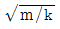
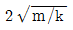
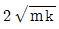
- 2km
(정답률: 알수없음)
46. 다음 흡음재료 중 주요 흡음영역이 저음역대 인것은?
- 석고보드
- 펠트
- 암면
- 유리섬유
(정답률: 알수없음)
47. 압축공기나 보일러의 고압증기의 대기방출, jet noise 등을 감소시키기 위해 사용하는 소음기로 가장 적합한 것은?
- 팽창형 소음기
- 흡음형 소음기
- 공명형 소음기
- 취출구 소음기
(정답률: 알수없음)
48. 급배수 설비소음 방지를 위한 배관공법상 대책으로 가장 거리가 먼 것은?
- 거실, 침실의 벽에 배관을 고정시킨다.
- 발생원으로부터 가까운 배관계통에 플렉시블 조인트를 설치한다.
- 매립배관을 피한다.
- 벽, 바닥을 배관이 관통하는 경우 그 부분의 관벽을 완충재 등에 의해 절연한다.
(정답률: 알수없음)
49. 질량법칙이 만족되는 영역에서 면밀도가 30kg/m2인 단일벽체에 1000Hz 음파가 수직입사 시 이 벽체의 투과손실은?
- 36.6dB
- 42.4dB
- 46.5dB
- 52.9dB
(정답률: 알수없음)
50. 불균형 질량 2kg이 반지름 0.3m의 원주상을 300rpm으로 회전하는 경우 가진력의 최대값은?
- 532N
- 557N
- 592N
- 637N
(정답률: 알수없음)
51. 투과손실이 65dB인 벽에 벽전체 면적의 5%에 해당하는 공기구멍을 뚫었다. 이 벽의 전체 투과손실(TL)은?
- 13dB
- 16dB
- 19dB
- 22dB
(정답률: 알수없음)
52. 무게가 500kg인 기계를 탄성지지하여 40dB의 방진효과를 얻기 위한 진동전달율(%)은?
- 1%
- 2%
- 3%
- 4%
(정답률: 알수없음)
53. 방진재별 특성에 관한 설명으로 옳지 않은 것은?
- 방진고무는 고무자체의 내부마찰에 의해 저항을 얻을 수 있어 고주파 진동의 차진에 양호하다.
- 방진고무는 압축, 전단, 타선, 등의 사용방법에 따라 1개로 2축 방향 및 회전방향의 스프링정수를 광범위하게 선택할 수 있다.
- 공기스프링은 구조가 간단하고 부대시설이 불필요하다.
- 금속스프링은 감쇠가 거의 없으며, 공진시에 전달율이 매우 크다.
(정답률: 알수없음)
54.
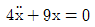
주어지는 비감쇠 자유진동계에서 고유각진동수(wn)는?- 1/2
- 1/3
- 3/2
- 2/3
(정답률: 알수없음)
55. 다음 중 감쇠가 계에서 갖는 기능으로 옳지 않은 것은?
- 바닥으로 진동에너지 전달의 감소
- 공진시에 진동 진폭의 감소
- 충격시의 진동 감소
- 충격시의 자유진동 증가
(정답률: 알수없음)
56. 발파풍압의 감소방안으로 가장 거리가 먼 것은?
- 지발당 장약량을 감소시킨다.
- 기폭방법에서 역기폭보다는 정기폭을 사용한다.
- 완전전색이 이루어지도록 한다.
- 주택가에서의 소할발파에 부치기 발파를 하지 않는 다.
(정답률: 알수없음)
57. 방진고무의 정적스프링 정수 Ks를 나타낸 식으로 옳은 것은? (단, W : 하중, ΔI : 정적 수축량)
- Ks=W×△I
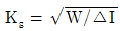
- Ks=△I
- Ks=W/△I
(정답률: 알수없음)
58. 부족감쇠 강제진동에서 진폭비(M.F)는? (단, Fo외력, k 스프링상수, x(w) 진동변위)
- x(w)/Fo∙k
- k/Fo/x(w)
- Fo/k/x(w)
- x(w)/Fo/k
(정답률: 알수없음)
59. 다음은 자동차의 방진과 관련한 설명이다. ( )안에 알맞은 것은?
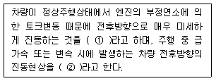
- ① 시미(shimmy), ② 져더(judder)
- ① 져더(judder), ② 시미(shimmy)
- ① 서지(surge), ② 저크(jerk)
- ① 저크(jerk), ② 서지(surge)
(정답률: 알수없음)
60. 흡음재료의 선택 및 사용상 주의점에 관한 설명으로 옳지 않은 것은?
- 흡음율은 시공할 때의 배후 공기층 상황에 따라 변화되므로 시공할 때와 동일조건의 흡음율 자료를 이용해야 한다.
- 흡음재료를 전체 내벽에 분산하여 부착하는 것이 한 곳에 집중하는 것보다 효과적이다.
- 실내의 모서리에 흡음재를 부착시키면 흡음효과가 좋다.
- 막진동이나 판진동형의 것은 도장에 의한 흡음율 저하가 크다.
(정답률: 알수없음)
4과목: 소음진동방지기술
61. 다음은 소음진동관리법규상 공사장 방음시설 설치기준이다. ( )안에 알맞은 것은?
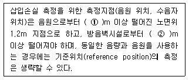
- ① 3, ② 1.5
- ① 3, ② 2
- ① 5, ② 1.5
- ① 5, ② 2
(정답률: 알수없음)
62. 소음진동관리법규상 도시지역 중 상업지역의 낮(06:00~22:00)시간대 공장진동 배출허용기준은?
- 60dB(V) 이하
- 65dB(V) 이하
- 70dB(V) 이하
- 75dB(V) 이하
(정답률: 알수없음)
63. 소음진동관리법규상·시장·군수·구청장 등은 배출허용기준에 맞는지 확인을 위해 배출시설과 방지시설의 가동상태를 점검할 수 있는데, 다음 중 점검을 위한 소음·진동 검사를 지시하거나 의뢰할 수 있는 검사기관으로 옳지 않은 것은?
- 보건환경연구원
- 환경시험과학원
- 유역환경청
- 지방환경청
(정답률: 알수없음)
64. 소음진동관리법상 운행차 소음허용기준 초과와 관련하여 개선명령을 받은 자가 환경부령으로 정하는 바에 따라 개선결과를 확인받은 후 특별시장 등에게 보고를 하지 아니한 경우 벌칙(또는 과태료부과)기준으로 옳은 것은?
- 200만원 이하의 과태료
- 300만원 이하의 과태료
- 6개월 이하의 징역 또는 500만원 이하의 벌금
- 1년 이하의 징역 또는 1천만원 이하의 벌금
(정답률: 알수없음)
65. 소음진동관리법규상 소음도표지 기준에 관한 설명중 ( )안에 가장 적합한 것은?
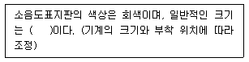
- 70mm × 70mm
- 75mm × 75mm
- 80mm × 80mm
- 85mm × 85mm
(정답률: 알수없음)
66. 소음진동관리법규상 소음배출시설기준으로 옳지 않은 것은? (단, 마력기준시설 및 기계·기구기준)
- 10마력 이상의 유압식 외의 프레스 및 30마력 이상의 유압식 프레스(유압식 절곡기는 제외한다)
- 30마력 이상의 주조기계(다이케스팅기를 포함한다)
- 10마력 이상의 압축기(나사식 압축기는 50마력 이상으로 한다)
- 30마력 이상의 인쇄기계(활판인쇄기계는 20마력 이상으로 한다)
(정답률: 알수없음)
67. 소음진동관리법규상 운행자동차의 경적소음 허용기준으로 옳은 것은? (단, 2006년 1월 1일 이후에 제작되는 자동차이며, 중대형 승용자동차 기준)
- 100dB(C) 이하
- 1⑤dB(C) 이하
- 110dB(C) 이하
- 112dB(C) 이하
(정답률: 알수없음)
68. 소음진동관리법규상 시·도지사가 매년 환경부장관에게 제출하는 연차보고서에 포함되어야 할 내용으로 가장 거리가 먼 것은?
- 소음·진동발생원 및 소음·진동현황
- 소음·진동 행정처분실적 및 점검계획
- 소음·진동저감대책 추진실적 및 추진계획
- 소요재원의 확보계획
(정답률: 알수없음)
69. 소음진동관리법규상 시장·군수·구청장 등이 소음진동배출허용기준 초과와 관련한 개선명령을 하는 경우에 최대 얼마의 범위에서 그 기간을 정하여야 하는가? (단, 기간연장 제외)
- 1년 6월의 범위
- 1년의 범위
- 6월의 범위
- 3월의 범위
(정답률: 알수없음)
70. 소음진동관리법령상 인증을 면제할 수 있는 자동차에 해당하는 것은?
- 박람회용 전시 자동차
- 국가대표 선수용으로 사용하기 위하여 반입하는 자동차
- 외국에서 국내의 비영리단체에 무상으로 기증하여 반입하는 자동차
- 항공기 지상조업용으로 반입하는 자동차
(정답률: 알수없음)
71. 소음진동관리법규상 생활진동의 규제기준치는 생활진동의 영향이 미치는 대상 지역을 기준으로 하여 적용하는데 발파진동의 경우 보정기준으로 옳은 것은?
- 주간에만 규제기준치에 +5dB을 보정한다.
- 주간에만 규제기준치에 +10dB을 보정한다.
- 주간에는 규제기준치에 +5dB을, 야간에는 규제기준치에 +10dB을 보정한다.
- 주간에는 규제기준치에 +10dB을, 야간에는 규제기준치에 +5dB을 보정한다.
(정답률: 알수없음)
72. 소음진동관리법규상 운행차 정기검사대행자의 기술능력기준에 해당하지 않는 자격소지자는?
- 건설안전산업기사
- 건설기계정비산업기사
- 자동자정비산업기사
- 자동차검사산업기사
(정답률: 알수없음)
73. 소음진동관리법령상 항공기 소음한도 기준으로 옳은 것은? (단, 공항인근 지역이 아닌 그 밖의 지역기준)
- 항공기소음영향도(WECPNL) 90
- 항공기소음영향도(WECPNL) 85
- 항공기소음영향도(WECPNL) 80
- 항공기소음영향도(WECPNL) 75
(정답률: 알수없음)
74. 소음진동관리법규상 도시지역 중 일반주거지역의 18:00~24:00 시간대의 공장소음 배출허용기준으로 옳은 것은?
- 45dB(A) 이하
- 50dB(A) 이하
- 55dB(A) 이하
- 60dB(A) 이하
(정답률: 알수없음)
75. 소음진동관리법규상 사업장의 명칭이 변경되어 배출시설의 변경신고를 하여야 하는 경우, 이를 변경한 날부터 며칠이내에 배출시설 변경신고서와 첨부서류를 시장·군수·구청장 등에게 제출하여야 하는가?
- 5일 이내
- 15일 이내
- 30일 이내
- 2개월 이내
(정답률: 알수없음)
76. 소음진동관리법규상 소음·진동 배출허용기준을 초과하여 배출하여도 생활환경에 피해를 줄 우려가 없다고 환경부령으로 정하는 경우에 방지시설의 설치 면제를 받기 위해서는 해당 공장의 부지경계선으로부터 직선거리로 얼마 이내(기준)에 공장 또는 사업장이 없어야 하는가?
- 50 미터
- 100 미터
- 200 미터
- 500 미터
(정답률: 알수없음)
77. 소음진동관리법규상 승용자동차에 포함되지 않는 것은? (단, 2006년 1월 1일부터 제작되는 자동차에 한한다.)
- 밴(van)
- 지프(jeep)
- 웨곤(wagon)
- 승합차
(정답률: 알수없음)
78. 소음진동관리법령상 소음도 검사기관의 지정기준 중 기술직 자격요건으로 옳지 않은 것은?
- 「고등교육법」에 따른 대학에서 소음·진동 관련분야를 전공하여 학사 이상의 학위를 취득한 자
- 소음·진동 관련 분야의 기사로서 소음·진동 분야의 실무경력이 1년 이상인 자
- 「고등교육법」에 따른 대학 이상 졸업자로서 소음·진동 분야의 실무경력이 2년 이상인 자
- 「고등교육법」에 따른 전문대학에서 소음·진동 관련 분야를 전공한 자로서 전문학사 이상의 학위를 취득한 자
(정답률: 알수없음)
79. 소음진동관리법상 벌칙기준 중 3년 이하의 징역 또는 1천 500만원 이하의 벌금에 처하는 경우에 해당하지 아니하는 자는?
- 제작차 소음허용기준에 맞지 아니하게 자동차를 제작한 자
- 제작차 소음허용기준에 적합하다는 환경부장관의 인증을 받지 아니하고 자동차를 제작한 자
- 거짓으로 배출시설 설치신고를 하여 받은 폐쇄명령을 위반한 자
- 허가를 받지 아니하고 배출시설을 설치한 자
(정답률: 알수없음)
80. 소음진동관리법규상 소음방지시설과 가장 거리가 먼 것은?
- 소음기
- 탄성시설
- 방음언덕
- 방음창
(정답률: 알수없음)